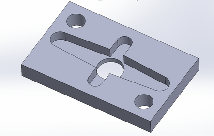
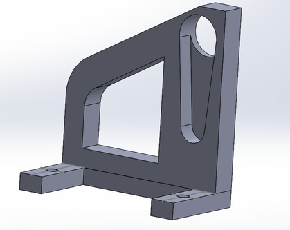
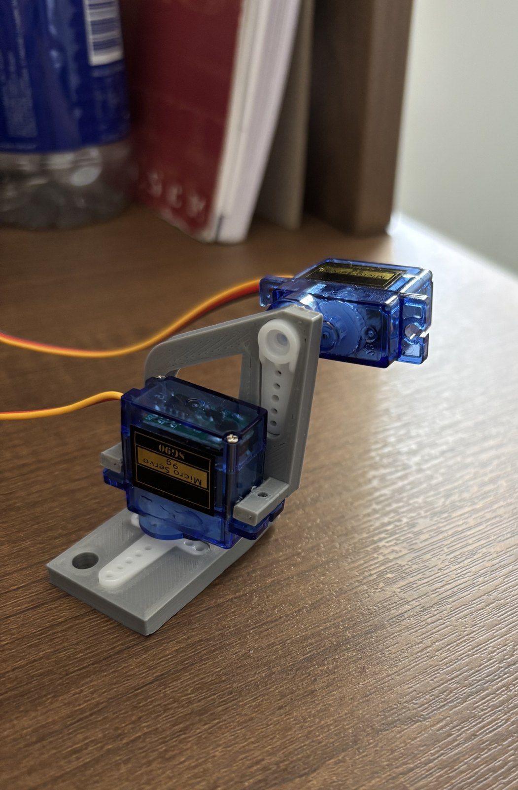
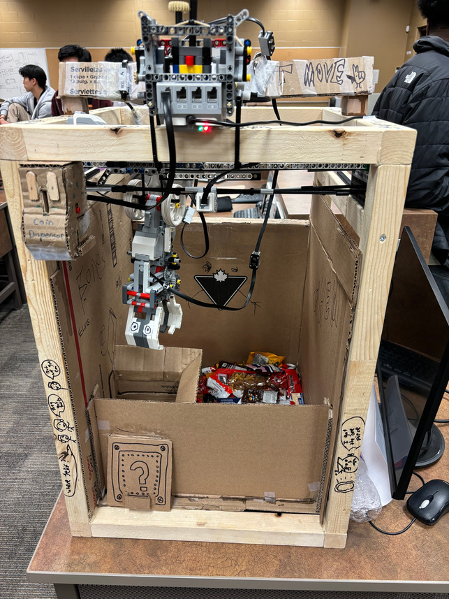
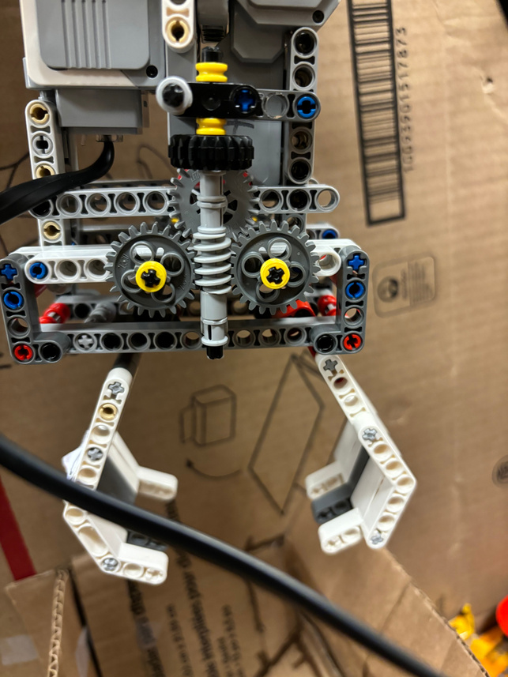
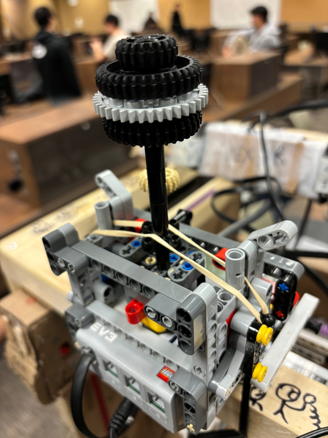

Head-tracking turret



Mechanical: modeled the baseplate and tilt bracket, iterated clearance fits, and designed the parts for reliable desktop 3D printing and assembly.
Control: sent OpenCV face coordinates over serial to an Arduino controlling two servo motors. The assembled mechanism followed face motion through both axes.
Claw machine



Mechanical: co-developed the LEGO Technic worm-gear claw for gripping strength and repeatable motion inside a custom structural enclosure.
Software: served as the sole RobotC developer, programming the XYZ gantry, joystick interface, claw sequence, game states, and display. More than 50 people used the machine during a University of Waterloo showcase.